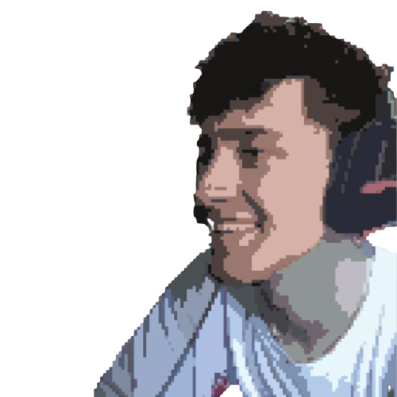

Olá, meu nome é
Lucas Oliveira
Desenvolvedor Front-End
Amo ver os elementos tomando forma, a interação do cogido com a página, o estilo e a responsividade se aplicando, de poder fazer o que eu gostaria de ver se fosse um usuário.
